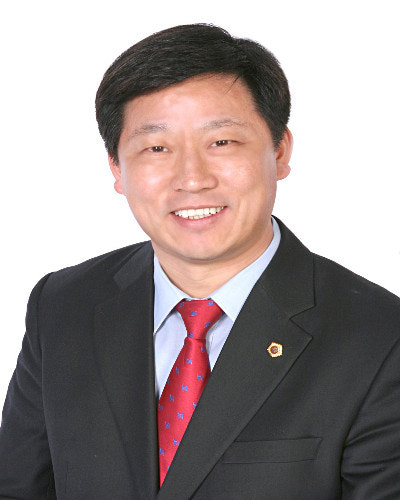

남악·오룡 주민이 KTX와 고속버스를 한 곳에서 바로 이용할 수 있도록, 임성역을 서남권 교통 허브 복합 환승센터로 조성하겠습니다.
AI 국가산업단지를 무안에 유치하고, 청년이 돌아오고 미래 먹거리가 넘치는 무안을 만들겠습니다.
전남·광주 통합 과정에서 남악 청사 기능을 반드시 존치시키고, 통합특별시 행정의 중심축으로 무안의 위상을 격상시키겠습니다.
무안의 주요 농산물인 양파·마늘의 생산·유통 체계를 정비하여 농가 소득을 보호하고 가격 안정을 이루겠습니다.
공항 안전 재개와 광주 군·민간공항 무안 통합이전을 군민 이익 중심으로 이끌어, 무안을 서남권 항공·첨단산업 거점도시로 만들겠습니다.